interplot: Plot the Effects of Variables in Interaction Terms
Frederick Solt and Yue Hu
2024-03-01
Source:vignettes/interplot-vignette.Rmd
interplot-vignette.RmdInteraction is a powerful tool to test conditional effects of one variable on the contribution of another variable to the dependent variable and has been extensively applied in the empirical research of social science since the 1970s (Wright Jr 1976). Unfortunately, the nonlinear nature determines that the statistical estimate of an interactive effect cannot be interpreted as straightforward as the coefficient of a regular regression parameter. Let’s use a simple example to illustrate this point: The following model use an interaction term to test the conditional effect of Z on X’s contribution (or the conditional effect of X on Z’s contribution) to the variance of Y.
\[Y = \beta_0 + \beta_1X + \beta_2Z + \beta_3X\times Z + \varepsilon.\] The contribution of X on Y is typically represented by the marginal effect:
\[\frac{\partial Y}{\partial X} = \beta_1 + \beta_3Z.\]
The standard error of this estimate is thus:
\[\hat{\sigma}_{\frac{\partial Y}{\partial X}} = \sqrt{var(\hat{\beta_1}) + Z^2var(\hat{\beta_3}) + 2Zcov(\hat{\beta_1}, \hat{\beta_3})}.\]
As Brambor, Clark, and Golder (2006, 70) indicates, the above equation suggests that its perfectly possible for the contribution of X on Y to be statistically significant for certain values of Z “even if all of the model parameters are insignificant.” In other words, one cannot infer whether X has a meaningful conditional effect on Y simply from the magnitude and significance of either \(\beta_1\) or \(\beta_3\) (Ibid., 74). Instead, the conditional effect should be examined based on the marginal effect at every observed value of Z (Berry, Golder, and Milton 2012; Brambor, Clark, and Golder 2006; Braumoeller 2004).
Furthermore, scholars have noticed that the point estimations of some interaction models, especially those depending on link functions (e.g., logit and probit) may not be as reliable as the estimates of the confidence intervals (Berry, DeMeritt, and Esarey 2016). Therefore, it is even more important to accurately present and examine the boundaries established by the confidence intervals than the point estimates in the test of conditional effect. Berry, Golder, and Milton (2012) also pointed out that the substantive significance of the conditional effect highly relates to the distribution of the conditioning variable (viz., Z in the above example). They thus recommend researchers to present the frequency distribution of the conditioning variable together with the marginal effects (especially when the effect trend goes across the zero point).
More recently, Esarey and Sumner (2017) uncovered that the estimation of the marginal effects suggested by Brambor, Clark, and Golder (2006) might cause a “multiple comparison problem” and result over- or underconfidence of the confidential intervals. They thus recommended to adjust the CIs with a critical t-statistics following the Benjamini1995 procedure.
The interplot package provides a convenient way to
operate and visualize above points with one or a series of plots
produced by a single function. The function visualizes the changes in
the coefficient of one variable (the posterior probabilities) in a
two-way interaction term conditional on the value of the other included
variable. The plot also includes simulated 95% confidential intervals of
these coefficients.In the current version, the function works with
ordinary linear regression models, generalized linear models (e.g.,
logit, probit, ordered logit, etc.), and multilevel (mixed-effects)
regressions, all with complete or multiply imputed data (in a list
format).
Comparing to established alternatives such as
effects::plot and sjplot::sjp.int,
interplot provides a more user-friendly way to quickly
produce plots that are easy to interpret. Moreover, it works on
multilevel models and outcomes from multiple imputations.
interplot plots the changes in the conditional
coefficient of one variable in the interaction, rather than changes
in the dependent variable itself as in the aforementioned functions.
This approach avoids displaying interaction effects across multiple
panels or multiple lines in favor of a single plot containing all the
relevant information. Moreover, by outputting ggplot
objects, interplot allows users to easily further customize
their graphs.
This vignette purposes to illustrate how users can apply these functions to improve the presentation of the interactions in their models.
Installation
To install:
- the latest released version:
install.packages("interplot"). - the latest developing version:
devtools::install_github("sammo3182/interplot").
Basic Use
Run a Model
This example is based on the mtcars dataset, which is
drawn from the 1974 volume of the US magazine Motor Trend. The
dependent variable is mileage in miles per (US) gallon
(mpg), and the independent variables are the number of
engine cylinders (cyl) and automobile weight in thousands
of pounds (wt).
data(mtcars) #load the dataSuppose we are interested in how automobile weight affects the relationship between of the number of engine cylinders on mileage and how the number of cylinders affects the relationship between the car’s weight and its mileage. Such conditional effects are modeled using a two-way multiplicative interaction term:
##
## Call:
## lm(formula = mpg ~ wt * cyl, data = mtcars)
##
## Residuals:
## Min 1Q Median 3Q Max
## -4.2288 -1.3495 -0.5042 1.4647 5.2344
##
## Coefficients:
## Estimate Std. Error t value Pr(>|t|)
## (Intercept) 54.3068 6.1275 8.863 1.29e-09 ***
## wt -8.6556 2.3201 -3.731 0.000861 ***
## cyl -3.8032 1.0050 -3.784 0.000747 ***
## wt:cyl 0.8084 0.3273 2.470 0.019882 *
## ---
## Signif. codes: 0 '***' 0.001 '**' 0.01 '*' 0.05 '.' 0.1 ' ' 1
##
## Residual standard error: 2.368 on 28 degrees of freedom
## Multiple R-squared: 0.8606, Adjusted R-squared: 0.8457
## F-statistic: 57.62 on 3 and 28 DF, p-value: 4.231e-12The coefficient of the interactive term (wt:cyl) is
positive and statistically significant at .05 level. This tells us that
the coefficient of wt depends on the value of
cyl and vice versa; these estimated coefficients are
conditional. It does not indicate anything, however, about the magnitude
or statistical significance of these conditional coefficients. A plot
produced by interplot easily and clearly answers these
latter questions.
Create a Basic Graph of the Conditional Coefficients
To plot conditional coefficients, a user needs to provide only three
basic pieces of information: the object of a regression result
(m), the variable whose coefficient is to be plotted
(var1), and the variable on which the coefficient is
conditional (var2). Taking the previous example, if we
intend to know how the weight of a car can affect the coefficient for
number of cylinders on the mileage, var1 is
cyl, and var2 is wt.
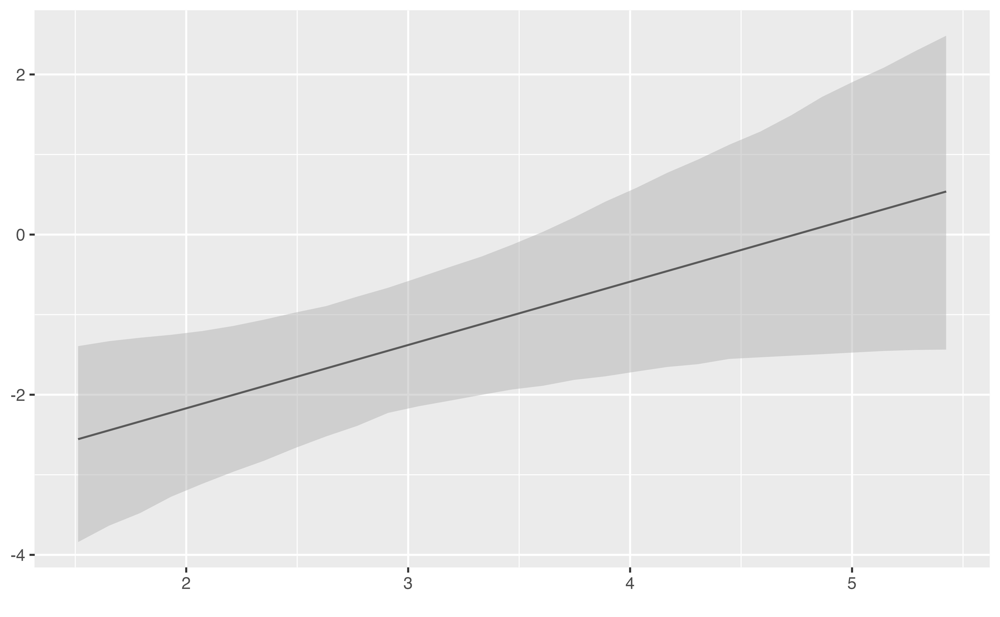
The plot clearly shows that with increasing automobile weight (along the x axis), the magnitude of the coefficient of the number of cylinders on the mileage also increases (along the y axis).
Similarly, to show how the number of cylinders affects the
coefficient of automobile weight on mileage, one only needs to switch
var1 and var2:
interplot(m = m_cyl, var1 = "wt", var2 = "cyl")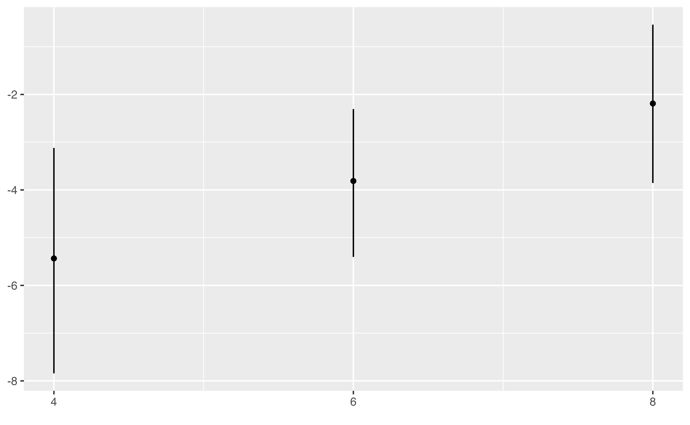
Users can adjust the CI level by setting the ci option.
The default value is 95% CIs. The following example resets the the CIs
to 90%.
interplot(m = m_cyl, var1 = "wt", var2 = "cyl", ci = .9, point = T)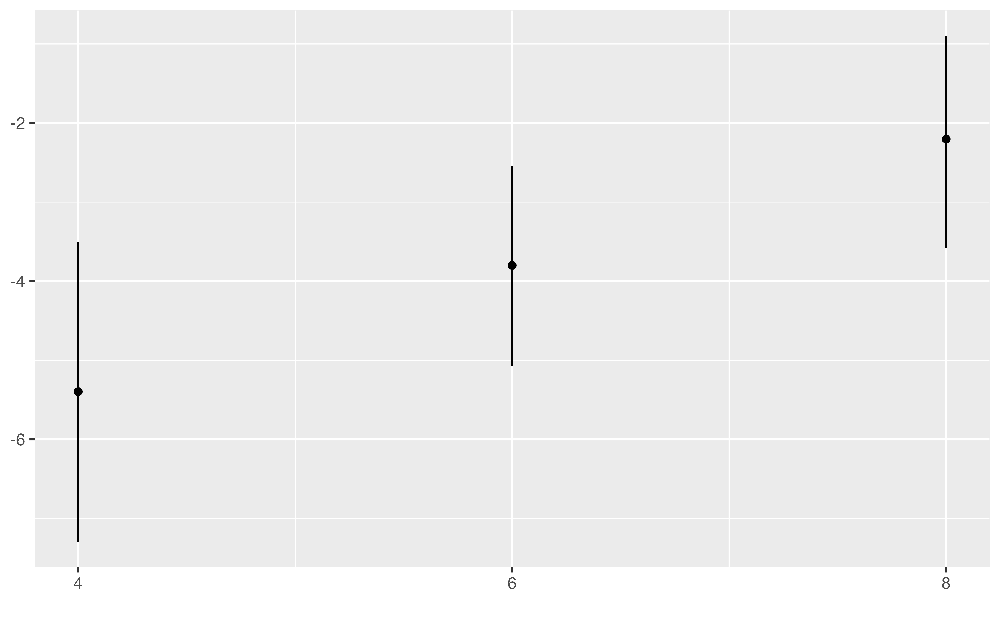
The format of the plot also changes when wt is
var1 and cyl is var2. This is
because cyl is not a continuous variable but a categorical
one with just three values: 4, 6, and 8. interplot
automatically detects the number of values taken on by var2
and chooses the appropriate plot format. If there are fewer than 10
values, the function will produce a “dot-and-whisker” plot; otherwise,
by default, it will generate a “line-and-ribbon” plot. Users may
override this default by setting the argument point to
TRUE.
interplot(m = m_cyl, var1 = "cyl", var2 = "wt", point = T) +
# changing the angle of x labels for a clearer vision
theme(axis.text.x = element_text(angle=90))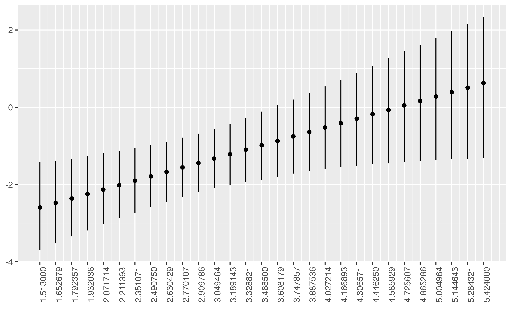
Change the Appearance of the Plot
Plots generated by interplot are, by design, very basic.
They are, however, ggplot objects and so may be easily
modified further.
interplot(m = m_cyl, var1 = "cyl", var2 = "wt") +
# Add labels for X and Y axes
xlab("Automobile Weight (thousands lbs)") +
ylab("Estimated Coefficient for\nNumber of Cylinders") +
# Change the background
theme_bw() +
# Add the title
ggtitle("Estimated Coefficient of Engine Cylinders \non Mileage by Automobile Weight") +
theme(plot.title = element_text(face="bold")) +
# Add a horizontal line at y = 0
geom_hline(yintercept = 0, linetype = "dashed")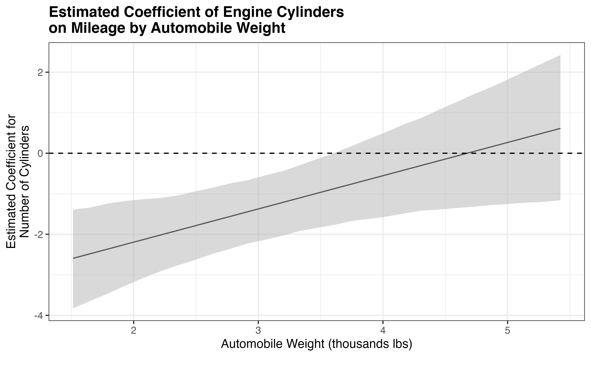
For the default settings of the whisker or ribbon, the users can also
use arguments, such as ercolor and esize to
modify. More arguments can be found in the ?interplot
file.
interplot(m = m_cyl, var1 = "wt", var2 = "cyl", ercolor = "blue", esize = 1.5) +
geom_point(size = 2, color = "red")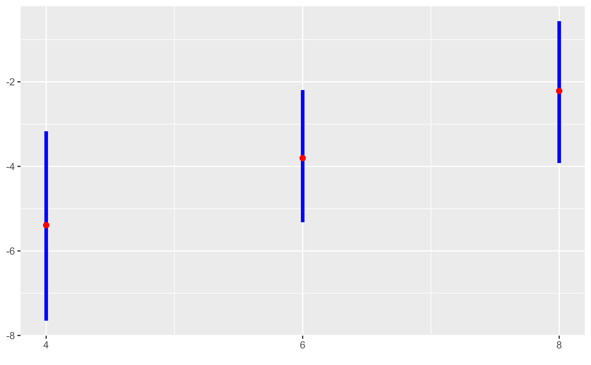
Plot the Effect of a Variable with a Quadratic Term
The simplest type of interaction is quadratic term, which can be
regarded as a variable interact with itself. interplot can
visualize this case when the variable names of var1 and
var2 are the same.
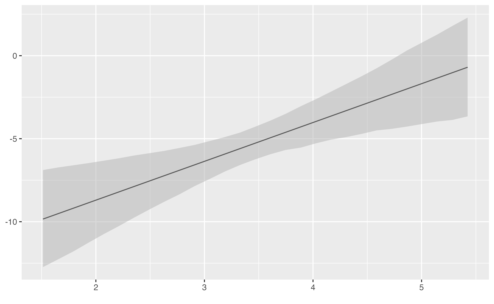
Plot Interactions with a Factor Term
When either the conditioned or the conditioning base term of an
interaction is a factor, interplot creates a facet in which
the conditional effect under each category of the factor is visualized
in a separate panel.
mtcars$gear <- factor(mtcars$gear)
m_gear <- lm(mpg ~ gear * wt, data = mtcars)
interplot(m = m_gear, var1 = "wt", var2 = "gear")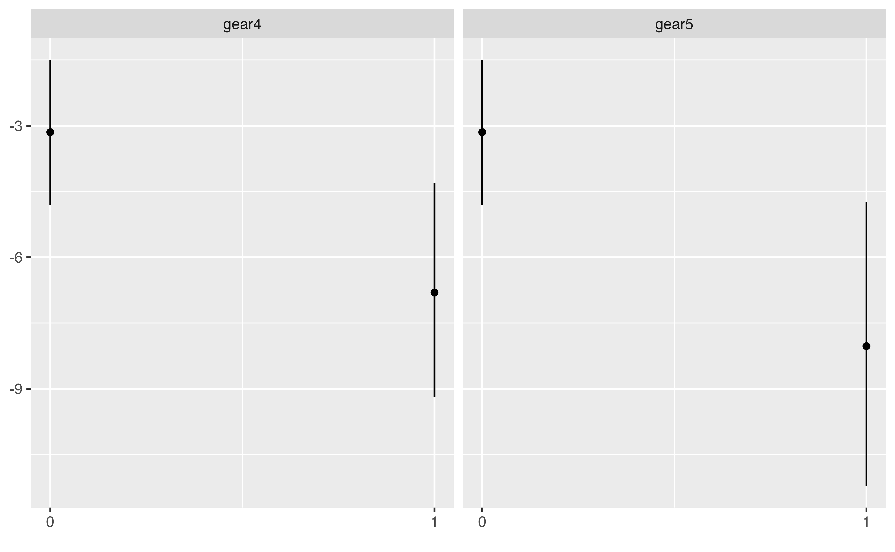
To edit the facet labels, use the facet_labs argument to
specify a character vector of the desired labels:
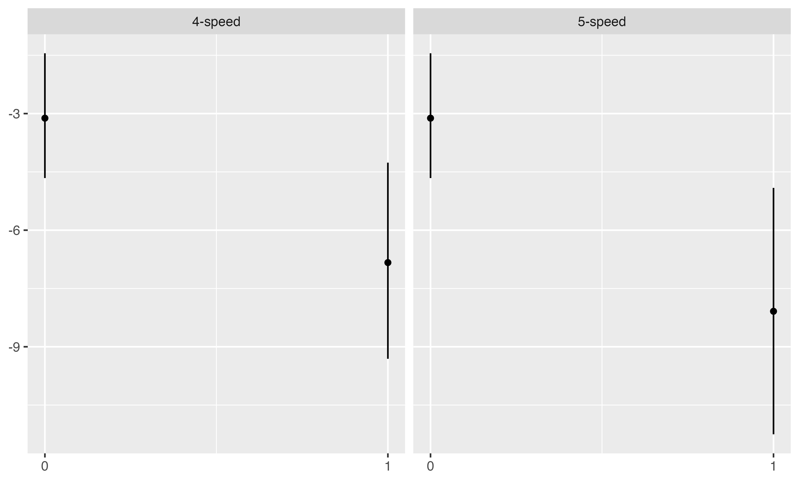
Include the Distribution of the Conditioning Variable
Berry, Golder, and Milton (2012) points
out that, when a variable’s conditional effect reaches statistical
significance over only part of the range of the conditioning variable,
it can be helpful to the evaluation of the substantive significance of
the conditional effect to know the distribution of the conditioning
variable. For this purpose, interplot has the
hist argument for users to choose to superimpose a
histogram at the bottom of the conditional effect plot.
interplot(m = m_cyl, var1 = "cyl", var2 = "wt", hist = TRUE) +
geom_hline(yintercept = 0, linetype = "dashed")
Our implementation of this option was inspired by the excellent work
of Hainmueller, Mummolo, and Xu (2016). A
tip is that when presenting the histogram, some default setting would
not be directly modified by the build-in arguments or the
geom functions. Instead, one can change these settings by
the aes function—as illustrated by the following
example.
interplot(m = m_cyl, var1 = "cyl", var2 = "wt", hist = TRUE) +
aes(color = "pink") + theme(legend.position="none") + # geom_line(color = "pink") +
geom_hline(yintercept = 0, linetype = "dashed")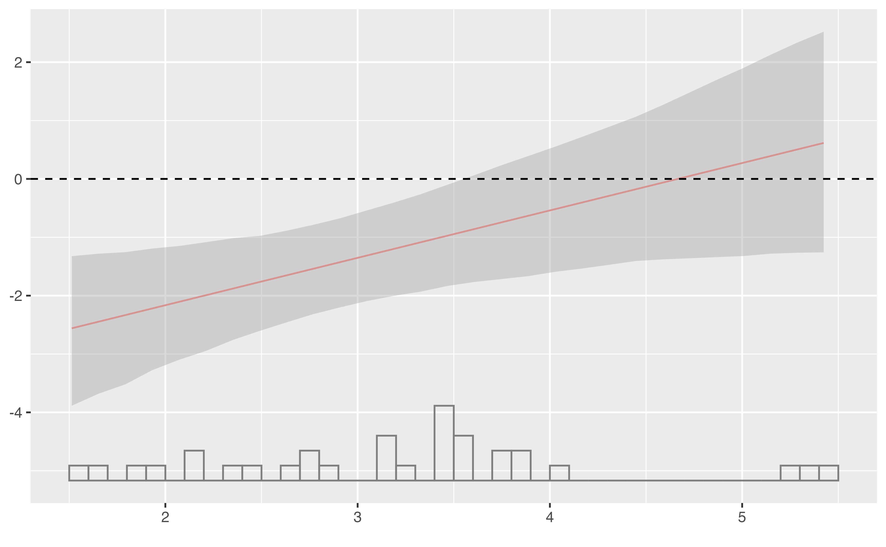
Advanced Use and Customization
interplot visualizes the conditional effect based on
(posterior) simulated marginal effects. The simulation provides a
probabilistic distribution of moderation effect of the conditioning
variable (var2) at every preset values (including the
minimum and maximum values) of the conditioned variable
(var1), denoted as Emin and Emax.
This output allows the function to further examine the conditional
effect statistically. interplot can examine if the
distribution of (Emax - Emin) covers zero.1 Users can
choose either method by setting the argument stats_cp to
“ci”. The default is “none.”

since the statistical results are presented as a ggplot
caption, one cannot using + lab(caption = ...) to specify
it as for a regular ggplot object. Instead, users can
modify the plot’s caption by specify the argument
txt_caption of the dwplot function.
set.seed(313)
interplot(m = m_cyl, var1 = "cyl", var2 = "wt", stats_cp = "ci",
txt_caption = "\n Source: Motor Trend Car Road Tests 1973.")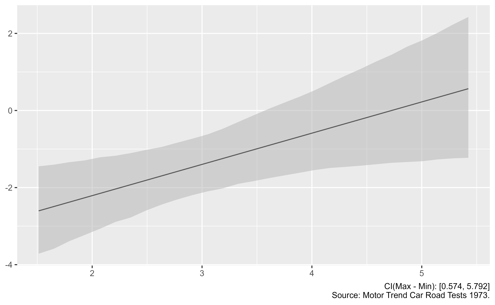
Adjust the Overconfidence in Confidence Interval Estimations
Berry, DeMeritt, and Esarey (2016) emphasized the importance to estimate the uncertainty in studying conditional effects. The most common way to do that is to follow the straightforward method of Brambor, Clark, and Golder (2006). Nevertheless, Esarey and Sumner (2017) pointed out that this method might cause a “multiple comparison problem” and result over- or underconfidence of the confidential intervals. For the overconfidence cases, they recommended to adjust the CIs with a critical t-statistics following the Benjamini1995 procedure.
interplot incorporates this recommendation with an
argument adjCI. If it is set TRUE, the
function will calculate the critical t-statistics to limit the false
discovery rate and adjust the estimation of confidence intervals. In the
following example, the left panel presents the conditional effect plot
with CIs estimated based on the Brambor, Clark,
and Golder (2006) method, and the right panel presents results
with adjusted CIs. Although the adjustment does not change the
substantial conclusion, we can see the adjusted CIs cover more area both
in the middle and at the extreme values of x.
stdCI_plot <- interplot(m = m_wt, var1 = "wt", var2 = "wt", adjCI = FALSE) +
ggtitle("Marginal Effects with Standard CIs")
adjCI_plot <- interplot(m = m_wt, var1 = "wt", var2 = "wt", adjCI = TRUE) +
ggtitle("Marginal Effects with Adjusted CIs")
library(gridExtra)
grid.arrange(stdCI_plot, adjCI_plot, ncol = 2)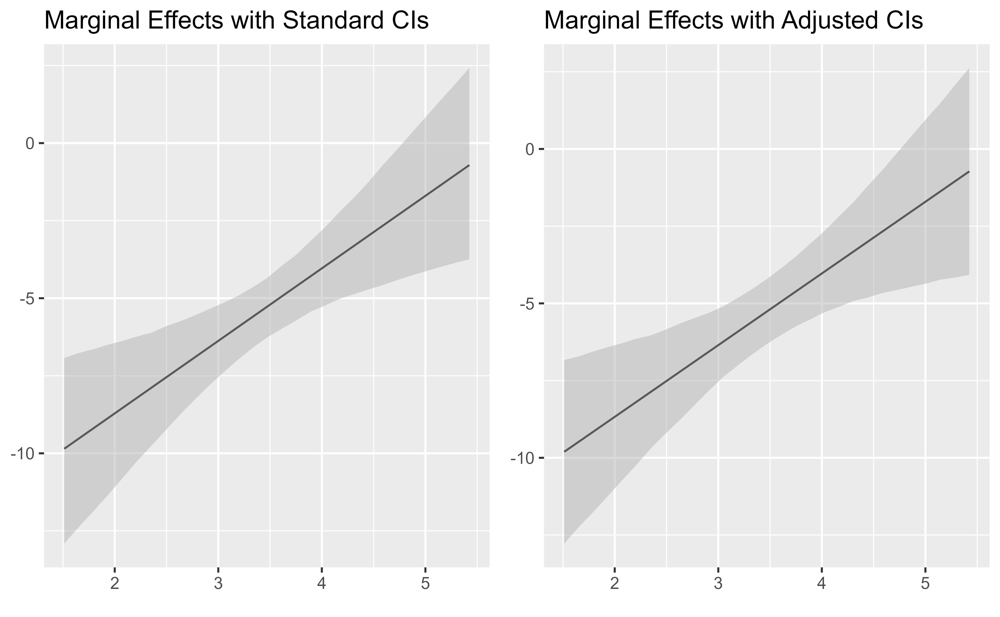
Plot Conditional Predicted Probability
Hanmer and Ozan Kalkan (2013) point out (also in the associated post in the AJPS website) that it is important to translate statistical results into meaningful quantities. The task not only pushes researchers to interpret the results in a real-life manner—which may lead to substantively different conclusions—but also provides convenience for a far broader scope of readers (e.g., policy makers, governmental officials, stakeholders, etc.) to understand the implications of the study and their importance.
To accomplish this task requires researchers to go beyond estimating
the effect for the “average case,” but focuses more on the values or
intervals that are illustratively important and meaningful. This could
be a time-consuming job, though, especially when researchers work on
models with limited dependent variables. interplot provides
a convenient way to achieve the task. When researchers are dealing with
general linear flat or multilevel models, they have the choice to set
the argument predPro to TRUE and give the
critical values they are interested in the argument
var2_vals. Then, interplot will automatically
estimated the conditional effects of predicted probabilities at these
given values of the conditioned variable. The following example
illustrates how it works.
In this example, we are interested how the economic inequality affect the impact of income on the U.S. citizens’ belief in meritocracy, a critical ideology of the “American Dream.” We estimated this conditional effect based on an interaction model with three years of Pew surveys (2006, 2007, and 2009), in which the income is the conditioned variable and economic inequality (county-level Gini coefficients).2 We first estimate the average conditional effect for the entire sample and then estimate the conditional predicted probabilities for citizens with the lowest and highest levels of income separately. As shown in the following plot, the average case in the left panel only shows a decreasing conditional effect, while the predicted probability plot in the right uncovers conditional effects in opposite directions for the high and low income individuals.
pew1.w <- read.csv("pew1_w.csv")
m <- glm(formula=meritocracy~ginicnty+income_i+ginicnty:income_i+income_cnty+black_cnty+
perc_bush04+pop_cnty+educ_i+age_i+gender_i+unemp_i+union_i+partyid_i+
ideo_i+attend_i+survid2006+survid2007+survid2009,
data=pew1.w,family=binomial(link="logit"))
plot_avg <- interplot(m, var1 = "ginicnty",var2 = "income_i", predPro = FALSE) +
ggtitle("Average Conditional Effects")
plot_3val <- interplot(m, var1 = "ginicnty",var2 = "income_i", predPro = TRUE, var2_vals = c(min(pew1.w$income_i), max(pew1.w$income_i))) +
ggtitle("Conditional Predicted Probabilities for \nCitizens with Low and High Incomes") +
scale_colour_discrete(guide = guide_legend(title = "Income"), labels = c("Low", "High")) +
scale_fill_discrete(guide = guide_legend(title = "Income"), labels = c("Low", "High")) +
theme(legend.position = c(0, .8), legend.justification = c(0, .5))
grid.arrange(plot_avg, plot_3val, ncol = 2)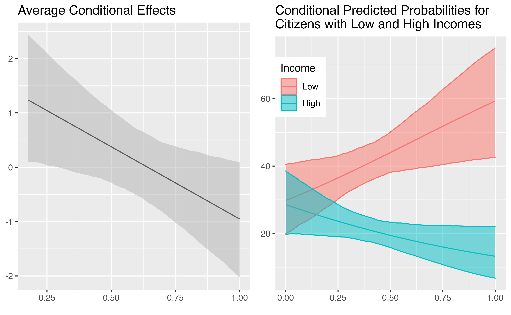
Plot Conditional Effects Without a Model
In some cases, one may analyze some complicated or self-made
regression functions which are not supported by the current version of
interplot. For such models, as long as the user has a
dataset loading the simulated results of the interaction effects, she
can still use interplot to visualize it. The dataset needs
four columns the scale of the conditioning variable (fake),
the simulated interactive effect at each break of the conditioning
variable (coef1), and the simulated lower bound and upper
bound of the confidence interval (lb, and ub).
The column names should be exactly the ones shown in the above
parentheses. Here is an example with some arbitrary artificial data:
# Create a fake dataset of conditional effects
fake <- rnorm(100, 0, 1)
coef1 <- fake * sample(.5:2.5, 100, replace = T)
lb <- coef1 - .5
ub <- coef1 + .5
df_fake <- data.frame(cbind(fake, coef1, lb, ub))
# Use interplot directly with the dataset
interplot(df_fake)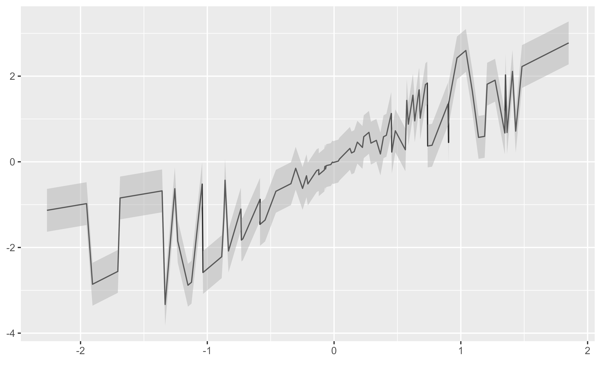
If one also has the data of the var2, she can also draw
a histogram under it by the argument var_dt.
var2_fake <- fake
# Set `hist` to TRUE is required to superimpose a histogram.
interplot(df_fake, hist = TRUE, var2_dt = var2_fake)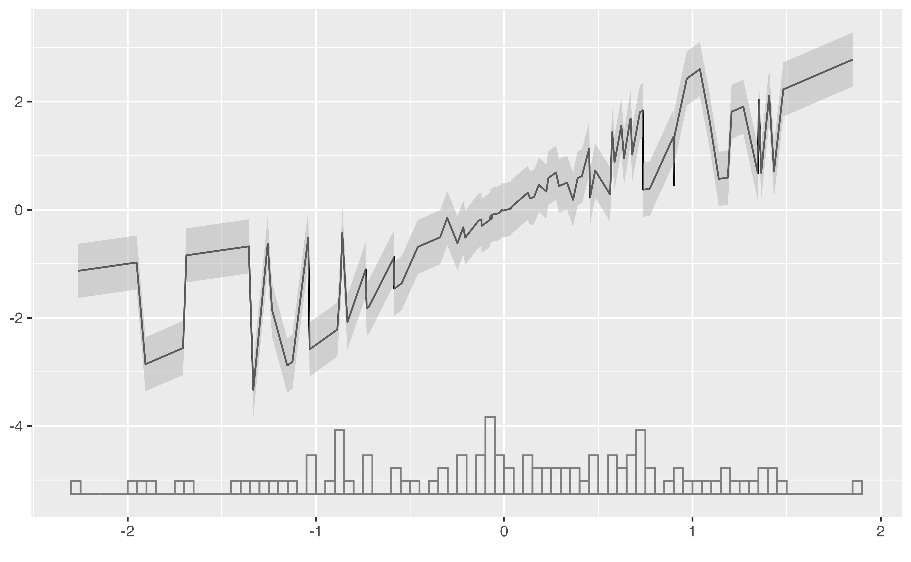
## The ribbon and histogram do not fit. This is just an illustrationConclusion
The interplot package provides a flexible and convenient
way to visualize conditional coefficients of variables in multiplicative
interaction terms. This vignette offers an overview of its use and
features. We encourage users to consult the help files for more
details.
The development of the package is ongoing, and future research promises a compatible tool for more types of regressions and more functions. Please contact us with any questions, bug reports, and comments.
Affiliation
Frederick Solt
Department of Political Science,
University of Iowa,
324 Schaeffer Hall,
20 E Washington St, Iowa City, IA, 52242
Email: frederick-solt@uiowa.edu
Website: https://fsolt.org
Yue Hu
Department of Political Science,
Tsinghua University,
Mingzhai 114,
Qinghua Yuan, Haidian District, Beijing 100084, China
Email: yuehu@tsinghua.edu.cn
Website: https://sammo3182.github.io
Reference
Be aware that this method assumes that either the linear model or the one with an interaction is true. It is uncertain how the test would perform if neither is the true model. An alternative way to test the significance of the conditional effect is to compare the models with and without interactions as the same through model comparison tests, such as Wald, likelihood ratio, or Hausman tests. They may give a significant result when neither models is a true model. These tests are also developed in a frequentist sense rather than based on the posterior simulated results.↩︎
For the purpose of illustration, we omitted the county level variance in this example. One can see more comprehensive analyses in Solt et al. (2017).↩︎